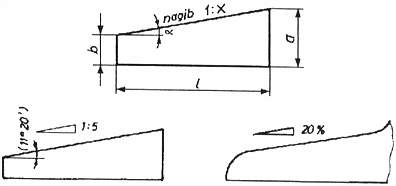
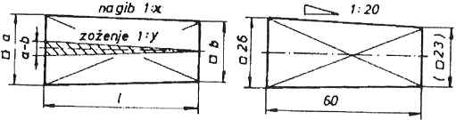
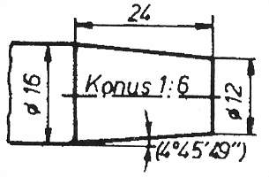

|
Kotiranje nagibov: Nagib je nagnjenost ene ploskve proti drugi ploskvi. Nad nagnjeno ploskev narišemo znak, ki je simbol za klin z vodoravno podlago. Pripišemo še razmerje med razliko višin in dolžino predmeta 1:X.  Slika 1 Kotiranje zoženj: Zoženje je poseben primer nagiba. Pri nagibu je nagnjena samo ena ploskev predmeta. Pri zoženju pa sta nagnjeni obe nasprotni si ploskvi predmeta. Tak primer je denimo pravilna prisekana piramida z osnovno ploskvijo kvadrata. Nad nagnjeno ploskev narišemo znak, ki je simbol za klin, vendar z nagnjeno podlago. Pripišemo še razmerje med razliko višin in dolžino predmeta 1:X.  Slika 2 Kotiranje konusov: Konus je enakomerno zoženje telesa okroglega prereza. Telesa z okroglim prerezom imenujemo rotacijska telesa. Konus je torej prisekani stožec. Konus torekj prepoznamo po grški èrki "fi" pred kotirno številko. Grška èrka "fi" namreè pomeni, da gre za premer, torej je telo krožnega prereza oziroma rotacijsko. Pri konusu kotiramo polovièni kot zoženja premera. Ta polovièni kot zoženja premera moramo izraèunati.  Slika 3 1. Vprašanja za usmerjanje pozornosti in usvajanje novih besed: 1. Kaj je nagib? 2. Kaj je zoženje? 3. Kakšna je razlika med nagibom in zoženjem? 4. Pri katerem geometrijskem telesu govorimo o zoženju? 5. Kaj je konus? 6. Pri katerem geometrijskem telesu govorimo o konusu? 7. Kaj kaže slika 1? 8. Kaj kaže slika 2? 9. Kaj kaže slika 3? 10. Koliko znaša nagib, izražen, kot razmerje, na sliki 1? 11. Koliko znaša nagib, izražen, kot odstotek, na sliki 1? 12. Koliko znaša nagib, izražen, kot naklon v kotnih stopinjah, na sliki 1? 2. Zapiši od ene do pet kljuènih besed, ki povzemajo vsebino te uène enote. 3. Vprašanja za razmislek, ponavljanje in povezovanje z lastno izkušnjo: 1. Kakšna je razlika med geometrijskim likom in geometrijskim telesom? 2. Kakšen je prerez konusa? 4. Domaèa naloga: V enem do petih stavkih zapiši, kaj ti je v tej uèni enoti najbolj ostalo v spominu. |